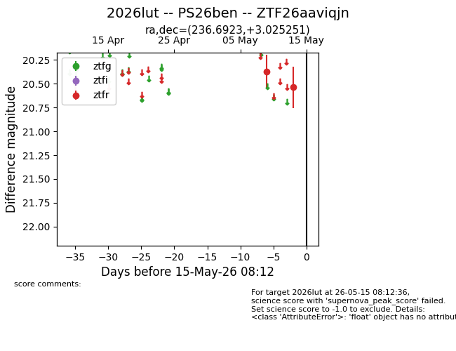
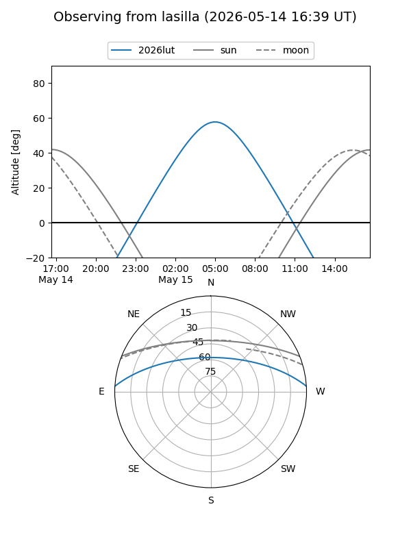
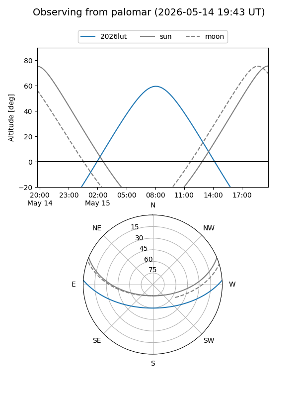

2026lut
Target 2026lut at 2026-05-15 08:14
Aliases and brokers:
FINK: link
Lasair: link
ALeRCE: link
TNS: link
YSE: link
alt names
ZTF26aaviqjn (ztf,fink_ztf)
2026lut (tns,yse)
PS26ben (panstarrs)
Coordinates:
equatorial (ra, dec) = 236.6923,+3.02525
equatorial (HMS+DMS) = 15:46:46.16,+03:01:30.91
galactic (l, b) = (10.7839,+41.69574)
Flags:
Photometry:
last ztfr=20.54
2 ztfr detections
Lightcurve

Visibility


Additional plots